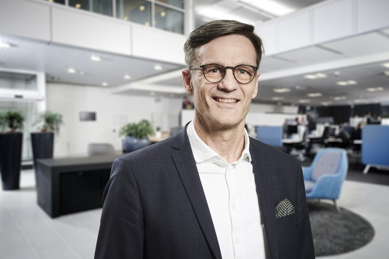

"Bridging the boardroom and technology — helping companies navigate digital transformation, risk, and strategic growth with clarity and conviction."
Experienced board member and senior executive with a strong track record in digital transformation, IT strategy, cybersecurity, and M&A integration. I bring deep operational credibility to the boardroom — having built and led large-scale IT organisations, executed major mergers, and delivered complex transformation programmes at group level.
My board contributions are grounded in genuine understanding of technology risk, digital opportunity, and strategic execution. I ask the right questions, challenge assumptions constructively, and help management teams translate ambition into delivery. I have served on boards of both operational IT companies and technology-intensive industrial businesses.
I am particularly valuable to boards navigating digital transformation, AI adoption, cybersecurity governance, or significant IT-driven change — including M&A. I communicate with equal confidence to fellow board members, management, and investors, adapting from technical depth to strategic overview as the situation demands.
Candid, trustworthy, and calm under pressure. I believe good governance is built on trust, transparency, and the courage to have difficult conversations.
Established security governance for critical national infrastructure at Norlys. Able to provide board-level oversight of cyber risk frameworks, incident preparedness, and CISO accountability — from a position of genuine operational experience.
Deep experience evaluating and challenging digital strategies from the inside. Helps boards ask the right questions about technology investment, programme delivery, and value realisation — beyond the slide deck.
Practical, management-level perspective on AI adoption. Invited panellist on "AI from a management perspective" at Kromann Reumert. Helps boards govern AI risk and opportunity without losing sight of real business value.
Proven track record assessing and integrating technology organisations through acquisitions. Led IT integration across 100+ merger projects. Brings structured IT due diligence perspective to investment and acquisition decisions.
Bridges board-level strategy and technology investment decisions. Experience building business cases, governing large ERP and platform programmes, and holding management accountable for digital delivery.
Trusted sparring partner for CIOs and CTOs. Brings constructive challenge from a position of credibility — having led comparable organisations and navigated similar transformation journeys at group level.
M.Sc. Engineering — Operations & Supply Chain Management
Aalborg University · 1984–1989
Graduate Diploma in Business Administration (HD) — Organisation & Management
Aarhus University · 1992–1995
Executive Board Education
Birn+Partners
Corporate Executive Management Programme
IMD Business School